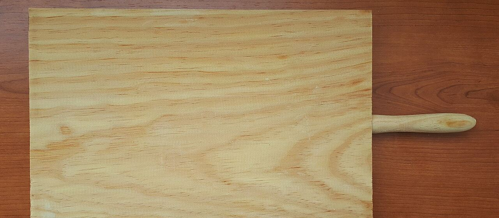
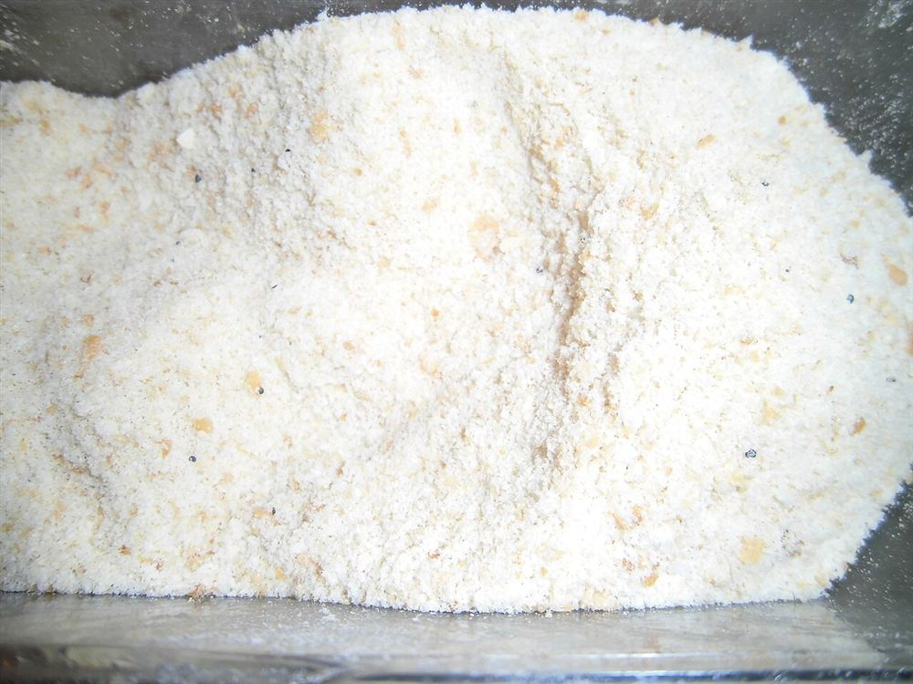
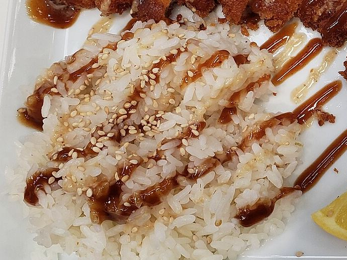

Photo: イメージ

寿多郎のこと
屋号
寿多郎
寿多郎は、熊本県菊池市隈府で、とんかつをご用意するお店です。お店の最新の情報は、Instagramまたはお電話でお確かめください。
このページは営業提案用の試作サンプルです。掲載の写真の一部はフリー素材のイメージで、実際のお店・お料理の写真ではありません。
とんかつという料理
ここでは、とんかつという料理の基本を、一般的なお話としてご紹介します。
-
衣
パン粉の衣は、肉の旨みを包み込み、サクッとした食感を生むと言われます。
Photo: イメージ
パン粉の衣。 -
揚げ
揚げ上がりのあと、少し置いて余熱で中まで火を通すと、肉がしっとり仕上がると言われます。
-
切り分け
食べやすく切り分けると、断面から肉のやわらかさや衣の層が見えてきます。お好みで、ごまを添えて香りを楽しむ方もいらっしゃいます。
Photo: イメージ
ごまをふって香りを添える楽しみ方もあります。
店のしるし
- 屋号
- 寿多郎
- 所在地
- 熊本県菊池市隈府498-6
- @tonkatsu_kotaro
- 営業時間・定休日
- 最新情報はInstagramまたはお電話でご確認ください